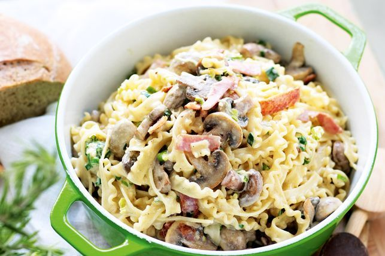

Fettucine Boscaiola

A pasta dish that is cooked in a white based cream sauce and contains bacon and mushrooms as the primary ingredients
Ingredient list
- Fettucine (or pasta of choice)
- Bacon
- Thickened cream
- Butter
- Shallot
- Button Mushrooms
- Fill pot with Boiling water and add serving size of pasta and cook for 6 minutes or until al dente.
- Slice Bacon and Button Mushrooms, Dice a Tablespoon or two of shallots depending on desired strength.
- Render bacon in a nonstick pan for 2 minutes, add diced Shallots for a further minute or until fragrant, add tablespoon of butter and half a cup of Mushrooms and saute
Mushrooms until slight browning is achieved.
- Add thickened cream and reduce until cream is thick and season with salt and pepper to taste.
- Strain and add pasta to pan before tossing/mixing.
- Plate and serve pasta.